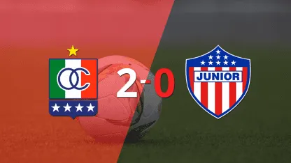
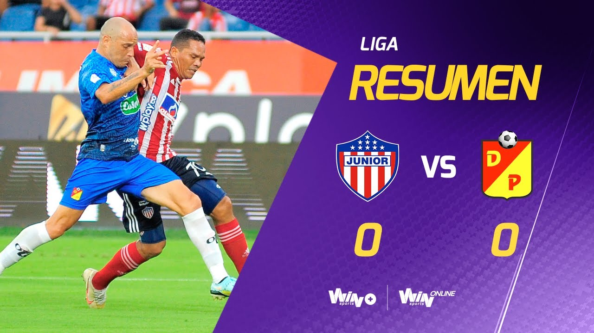
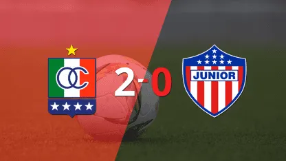
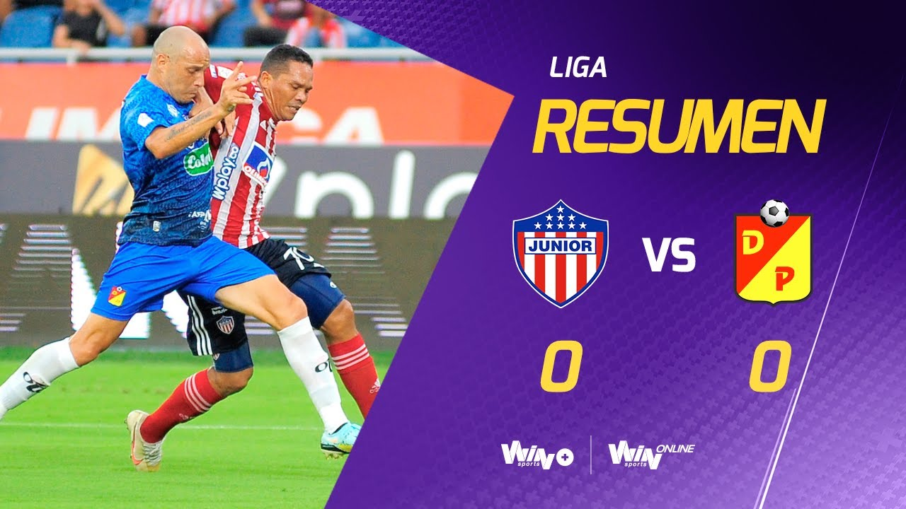
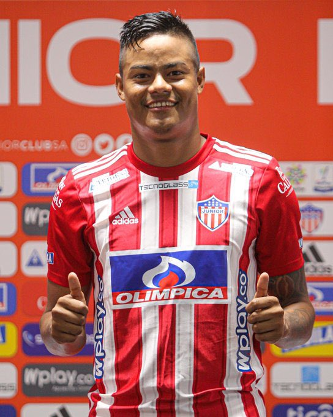

Que pasa con el Junior de Barranquilla?
El primer semestre de Junior en 2023 terminó sin cuadrangulares, sin CONMEBOL Sudamericana y problemas de vestuario. Su técnico Hernán "Bolillo" Gómez ya planea el equipo para la próxima campaña.
Evitó mencionar fracaso. Resaltó la dignidad. "Bolillo" Gómez se mantuvo sereno después de la eliminación en Neiva. Agradeció a los hinchas. Reveló que piensa en el futuro. "Hay que seguir trabajando para lo que viene. Junior tiene que formarse y volver a hacerse fuerte", añadió.
Estuvo a 10 minutos de jugar los cuadrangulares. La tabla fue generosa hasta donde pudo. Un autogol de Envigado en Pasto lo impidió. Depender de otros resultados suele ser traicionero. Llegó a esto por su mal inicio, el bajón de los ídolos, indisciplina y la lesión de Juan Fernando Quintero.
La reacción con "Bolillo" quedó a medias
El nuevo DT asumió con el equipo en cenizas. Priorizó el orden táctico, mejoró la defensa y consiguió 30 de puntos de 22. En su mandato, Junior entregó puntos definitivos en el El Metropolitano. Falló un penal contra Chicó en la última jugada que terminó 1-1, Tambien terrible fracaso contra el Caldas y 0-0 con el campeón Pereira. Dos empates que aún se lamentan y la derrota del Once Caldas.
.jpg) 



La indisciplina del "Chino Sandoval"

Cuando parecía encaminado a la clasificación tuvo problemas de camerino. Rescindió el contrato del delantero Luis Sandoval y llamó la atención a otros cuatro jugadores. “Primero la institución, por encima de cualquier cosa la institución", dijo "Bolillo"
“Luego del grave acto de indisciplina realizado por parte del jugador Luis Sandoval, en el que llegó en condiciones no aptas para el desarrollo de la actividad de un deportista de alto rendimiento, el día lunes 8 de mayo, y cumplido el debido proceso disciplinario, el club ha decido rescindir el contrato que lo vinculaba a la institución”, informó Junior,
Que sera de Bacca y Viera?
Dos ídolos perdieron el puesto en la titular. El capitán Sebastián Viera se lesionó y no recuperó su lugar en el arco. Pasó lo mismo con Carlos Bacca, adorado por los hinchas y autor de un gol en enero. Quedó relegado por su discreto desempeño. Gómez tuvo mano de hierro cuando el delantero se molestó por un cambio. “Yo también estoy disgustado, así lo dejamos. Estamos disgustados, si él está disgustado yo también"